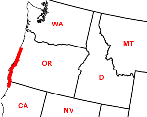

Day Twenty-Seven
Crescent City, CA - Otter Rock, OR
Date: 07/07/2002
Distance: 253 miles
Weather: Cloudy. 65 ish
This morning Ogden enjoys one of the natural wonders of the Northwest, when she eats a slug. This made for a very icky beginning to the day. We took showers and set off up the coast. We stopped not to far up to play on the shore. Oregon is a very dog friendly state. There are five dogs in the state brochure, and the beaches are leash free (and all public). So we had an extensive romp in the Pacific waters.
We stopped at a small oceanside cove and looked at the Oregon Natural Arches, made by the lapping waves.We also paused to see the sand dunes, known as Oregon's Sahara.
Further up the shore we enjoyed lunch in the Old Town section of Bandon. Looking out at the sea we had some great seafood from the sidewalk market. We stopped again soon at the sea lion caves, and saw, heard, and smelled the big sea creatures! The Oregon coast was still good looking even though overcast and chilly.
After looking at two campsites, we eventually decided to stay at Beverly Beach State Park. Oregon has state parks lining the coast, and it was easy to be discerning. We pull up in the front of a long line of cars to register at Beverly Beach, and find ourselves waiting for a man on foot to finish registering. We soon realize that this guy is from the last car in line, and just walked to the front. Jared, empowered by the Jersey liscense plates, gets out of the car and confronts the guy. "Are you in one of these cars?" he asked. "Didn't you see all these cars in front of you registering?" When the guy proclaimed that he didn't know what the fuss was about, the woman behind the desk told him to get back in his car. Two points- Jared.
We had rented a DVD (Gosford Park), but did not make it through because of limited battery time and sleepiness. We were full of PB&J, and slept well that night despite the rain.